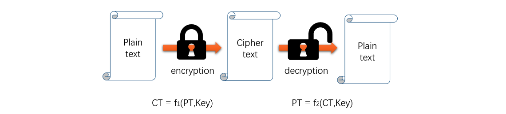

对称加密
对称加密中加密和解密使用相同的密钥，加解密速度快，算法公开，计算量小。

使用对称加密，交易双方都使用同样钥匙，安全性得不到保证；每对用户每次使用对称加密算法时，都需要使用其他人不知道的惟一钥匙，这会使得发收信双方所拥有的钥匙数量呈几何级数增长，密钥管理成为用户的负担。对称加密算法在分布式网络系统上使用较为困难，主要是因为密钥管理困难，使用成本较高。
常见的对称加密算法：
- DES（Data Encryption Standard）
- 3DES
- AES（Advanced Encryption Standard）密钥长度可选128/192/258/384/512 bits
- RC2、RC4、RC5、Blowfish 等
非对称加密
非对称加密，密钥成对出现，一公一私。公钥（public key）公开给所有人，而私钥自己保存，必须保证其私密性，如对私钥加密或设置权限。

Bob将信息使用 Alice 的公钥加密后发送给Alice，Alice 使用私钥解密加密的文档。非对称加密同样也可以认证身份，Alice 用自己的私钥加密信息，如果 Bob 能用 Alice 的公钥解密，则身份认证成功。
非对称加密的三种用途：
- 数字签名：用于让接收方确认发送方的身份，并确认数据没有篡改
- 密钥交换：发送方用对方的公钥加密一个对称密钥，并发送给对方
- 数据加密
常见的非对称加密算法：
- RSA：加密、解密、签名
- DSA：签名
中间人攻击Man-in-the-middle attack

- Alice向 Bob 索取他的公钥，Bob 将他的公钥发送给 Alice，并且此时 Mallory 拦截到 Bob 的公钥
- Mallory 将自己的公钥发送给 Alice，Alice 认为 Mallory 的公钥就是 Bob 的公钥
- Alice 用 Mallory 的公钥加密并将信息发送给 Bob，Mallory 拦截 Alice 信息，并解密
- Mallory 将消息查看或者修改后，使用之前拦截的 Bob公钥再次加密后，发送给 Bob
- Bob 收到消息后，相信这是 Alice 发来的信息
单向加密
单向加密只能加密，不能解密，又称为提取数据指纹。单向加密的作用是保证数据的完整性，单向加密会定长输入，当原有数据被改变后，输出会完全变化，又称为雪崩效应。
常见的单向加密算法：
- md5：128bit，按4位二进制组合成一个16进制数，结果由32个十六进制数组成的数字串
- sha1：160bit
- sha224、sha256、sha384、sha512
PKI公钥基础设施
PKI 公钥基础设施是抵御中间人攻击的一种认证技术，方法是 PKI 的相互认证的机制。

只要能安全的传输公钥，就能避免中间人攻击。要保证公钥不被替换，就需要一个可信的认证机构对公钥进行公证。
PKI 的主要的四个组件：
- 签证结构：CA，生成数字证书
- 登记机构：RA，接收证书请求，验证请求者身份，相当于 CA 的前端代理
- 证书吊销列表：CRL，保存证书颁发机构 CA 已经吊销的证书序列号和吊销日期
- PKI 存取库：对用户申请、证书、密钥、CRL 和日志信息进行存储和管理
CA是有公信力的认证中心。申请者将自己的公钥和个人（站点）信息发送给CA，请求其做认证。CA进行验证后，将申请人的信息和公钥使用Hash算法提取消息摘要，然后CA使用自己的私钥对消息摘要进行加密形成数字签名。CA将申请者的个人信息和申请者的公钥加上数字签名形成了数字证书，并发送给申请者。X.509定义了证书的结构以及认证协议标准，目前使用的是第三版。
发送方发送信息时同时也发送自己的数字证书，当接收方收到信息和数字证书时，接收方使用Hash算法对证书中的个人信息和公钥进行提取指纹，然后使用CA的公钥对数字签名进行解密，对比自己生成的消息摘要和解密出来的数字签名是否一致，如果一致，则发送方的公钥可用。
CA本身也有证书来证明自己的身份，并且CA是一种树形结构，高级别的CA会给低级别的CA做信用背书，操作系统和浏览器已经内置了顶层的CA证书。
CA 参与的安全通信过程：
- 首先保证CA为通信双方都认可的机构
- 通信双方向CA申请数字证书，包含了各自的公钥
- CA对通信双方进行合法性验证，通过则使用CA的私钥对申请文件进行加密（数字签名），并将数字签名和个人信息整理为一个数字证书
- 通信双方下载各自由CA签发的数字证书
- 当发送方要发送信息时，首先向接收方请求其数字证书
- 接收方利用CA的公钥检查接收到的数字证书是否合法，并得到接收方的公钥
- 发送方利用散列函数对明文数据提取指纹，然后通过程序随机生成一个session key，利用这个session key对明文数据进行对称加密，最后发送方用接收方的公钥对session key进行非对称加密
- 发送方将自己的证书和加密后的文件（包含session key）发送给接收方
- 接收方用CA的公钥验证发送方数字证书的合法性，包括用CA的公钥解密数字证书、用相同的签名算法ID提取指纹并与签名比对、数字证书的有效期、证书的主体名和被访问的主机名或人名是否相同以及证书是否在吊销列表中。
如果合法，则利用自己的私钥对session key进行解密得到明文数据，然后利用散列函数对明文数据提取指纹，将自己得到的指纹与发送方发来的指纹进行对比，如果一致，则没有被篡改，安全通信完成。
以上，对称加密和非对称加密解决了数据的保密性，单向加密解决了数据的完整性，使用 PKI 解决了数据的可用性或者是来源合法性。这样就建立了一个安全的通信。
SSL/TLS
1994年，NetScape公司设计了SSL协议（Secure Sockets Layer）的1.0版，但是未发布，设计 SSL 的目的是是为了对http报文进行加密，随后又陆续发布了2.0和3.0。1999年，互联网标准化组织ISOC接替NetScape公司，发布了SSL的升级版TLS （Transport Layer Security）1.0版，目前 TLS 的版本是TLS 1.3。
SSL/TLS发生作用的位置在 ISO/OSI 参考模型中的表示层、TCP/IP 模型中的应用层。

SSL协议分为两部分：Handshake protocol和Record Protocol。
Handshake Protocol用来在通信双方协商出一个安全的会话密钥以供后续对称加密中使用。Record Protocol则定义了传输的封装格式。
SSL/TLS协议通信的大概过程：
- 客户端向服务端索要公钥（证书）并验证
- 双方协商生成“会话密钥”
- 后续使用“会话密钥”加密通信
首先，客户端发出请求（ClientHello），将本地支持的加密套件（Cipher Suit）的列表，也就是本地支持的加密算法、支持的TLS版本、支持的压缩方法发送到服务端。另外产生一个随机数发送到服务端，同时保存在本地一个副本，稍后用于生成会话密钥。
然后，服务端回应（ServerHello），将服务端的数字证书发送给客户端，并确认使用的加密通信协议版本（也就是安全套件）、服务器生成的随机数、确认使用的加密算法。
其次，客户端收到服务端证书根据证书链验证真实性后，得到服务器的可信公钥，然后再发送一个新的随机数、编码改变通知（随后的信息都将用双方商定的加密方法和密钥发送）、客户端握手结束通知。
最后，服务端收到第三个随机数后，计算生成本次会话使用的会话密钥，然后发送编码改变通知和服务器握手结束通知。
随后的通信使用的http协议，然后使用会话密钥加密。
TLS 安全密码套件

- 密钥交换
- 身份验证
- 对称加密算法、强度、分组模式
- 签名 hash 算法
使用私有 CA 实现 https 站点
建立私有 CA
1.安装 openssl：yum install openssl -y
2.生成 CA 的密钥对：(umask 077;openssl genrsa -out /etc/pki/CA/private/cakey.pem 2048)

3.生成自签证书和相关文件：openssl req -new -x509 -key /etc/pki/CA/private/cakey.pem -out /etc/pki/CA/cacert.pem -days 365
- req：生成证书签署请求
- -new：新请求
- -key …：指定私钥文件
- -out …/-x509：生成自签署证书的位置和格式
- -days：有效天数

4.初始化 CA 工作环境：touch /etc/pki/CA/{index.txt,serial};echo 01/etc/pki/CA/serial
与 CA 配置的相关文件是/etc/pki/tls/openssl.cnf ，index.txt是数据库索引文件， serial 是用来记录签证相关信息的。
站点申请证书
1.安装 openssl
2.生成密钥，保存在服务配置文件目录下
1 | mkdir /usr/nginx-1.14.2/conf/ssl |
3.生成证书签署请求：openssl req -new -key /etc/nginx/ssl/nginx.key -out /etc/nginx/ssl/nginx.csr
需要注意的是，填写的信息需要与 CA 端保持一致，Organization Name 也必须保持一致。

4.将签署请求文件 nginx.csr发送给 CA 服务
CA 签署请求文件
1.签署请求文件：openssl ca -in /tmp/nginx.csr -out /tmp/nginx.crt -days 365

2.将证书发送给请求客户端
3.其他：CA 吊销证书openssl ca -revoke nginx.crt
站点部署证书
将证书保存在/etc/nginx/ssl/目录下，由于之前编译安装的 nginx，默认没有将ssl_module编译，所以需要重新将带有 ssl 模块一同编译nginx。

回到 Nginx 源码目录下，加上 SSL 模块，再次编译：
1 | ./configure --prefix=/usr/nginx-1.14.2/ --with-http_ssl_module |
由于当前操作是升级操作，之前使用的 Nginx 配置文件等不能被覆盖，所以不能使用make install，需要备份原nginx 二进制文件，将新的 nginx 二进制文件覆盖即可
1 | cp /usr/nginx-1.14.2/sbin/nginx /usr/nginx-1.14.2/sbin/nginx.without_ssl.bak |
objs/nginx是新编译的 nginx 程序，覆盖原 nginx 程序，启动 nginx。
修改nginx配置文件，开启 https
1 | server { |
另外还设置将80端口的访问重定向至443端口
1 | server { |
总结
部署 https 站点总体不难，但重点要理解安全通信中的原理。
推荐文章：图解openssl实现私有CA